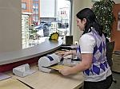

Kaufleute fuer Büromanagement

Kaufleute fuer Büromanagement arbeiten in Verwaltungsabteilungen von Unternehmen der unterschiedlichsten Wirtschaftsbereiche. Sie arbeiten ueblicherweise in Bueroraeumen und erledigen den Grossteil der Aufgaben am PC.
Was macht man in diesem Beruf?
- Innerbetriebliche Sektretaeriats- und Assistenzaufgaben
- Bearbeitung von Eingangs- und Ausgangspost
- Erstellung von Geschaeftsbriefen, Statistiken und Tabellen
- Koordination, Durchfuehrung und Ueberwachung von Geschaeftsterminen, Besprechungen und Veranstaltungen
- Vorbereitung von Geschaeftsreisen
- Bearbeitung von Belegen und Rechnungen
Welche Vorraussetzungen benötigt man für diesen Beruf?
- Flexibilität ist wichtig, da in diesem Beruf oft schnell zwischen unterschiedlichen Tätigkeiten ge-wechselt werden muss.
- Auch Kontaktfreudigkeit und Serviceorientierung ist notwendig um auf verschiedene Anliegen von Kunden und Kollegen höflich und angemessen einzugehen.
- Voraussetzung für die Ausbildung bei der Düssel-IT GmbH ist die Fachhochschulreife. Darüber hinaus werden gute Noten in den folgenden Fächern erwartet:
Was verdient man in den Ausbildungsjahren?
- Ausbildungsjahr: 713 Euro
- Ausbildungsjahr: 775 Euro
- Ausbildungsjahr: 854 Euro
Duessel IT
Systemkaufleute
Fachinformatiker